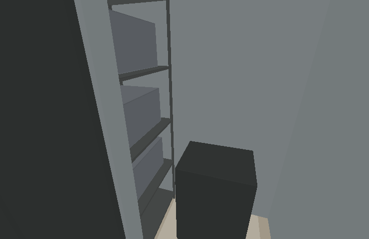
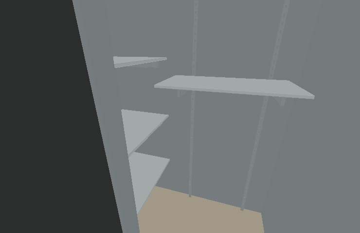

儲藏室改用可調式層架
層板不再限制大型清潔設備的收納。左側保留日常雜物層架，門正對區下方開放；每片層板連托架可依5公分孔距重新安裝，也能整片拆除。


| 部位 | 本次配置 |
|---|---|
| 左側收納 | 層板85公分寬、55公分深，共4層。 |
| 門正對區 | 層板90公分寬、45公分深，共2層；移除原60×45公分暫置矮櫃。 |
| 可調結構 | 235公分高金屬孔柱、5公分調整孔距、兩支托架承接每片層板。 |
| 落地停放 | 先預留75×90公分，最低托架下緣淨高140公分；底部不做底板、前柱或橫桿。 |
| 門口 | 維持原80公分外掛拉門，既有步行路線保留。 |
140公分是本次可調配置的預留高度；整組海豚含推車、配件的外廓仍未核實。實際需要更高時可移高或拆除層板。層板承重與壁面固定五金於選型時核定。
圖為實際3D網格的離線幾何與底色檢視，不含GPU木紋、反射與真實照明。四版已核對停放區、門口通行，以及儲藏室以外模型未變更。75×70×高130公分示意外框的直推路線通過檢查；此測試外框不是海豚產品規格。